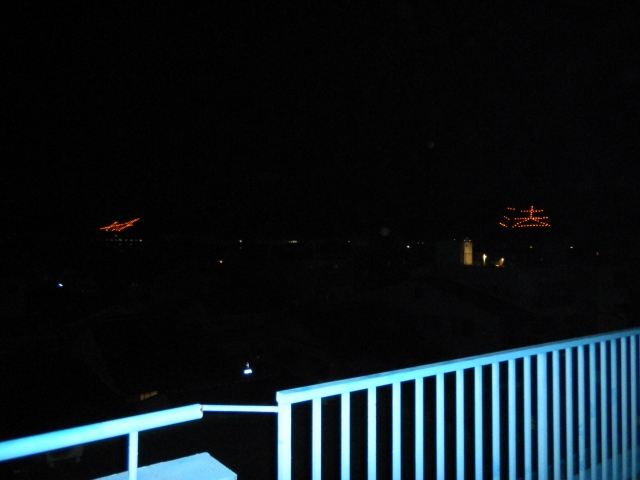

| ・ 五山送り火 (H23.08.16) | |||
去年は助教の人撮影でしたが、今年はI上くんとM下くんで送り火実況です。撮影はあのカメラでI上くん担当。露光時間とか撮影モードをいろいろ変えて撮りました。その数は75枚。今回はその中から選んだベストショットでお送りします。ちょうど来月に高橋先輩の講演会があるので、カメラを使って気付いたことは報告できますね。 |
|||
|
北野天満宮で院試合格祈願！ |
境内を進むと | ||
|
夏祭りです |
大文字 | ||
|
松ヶ崎妙法の法 |
松ヶ崎妙法の妙 | ||
|
舟形万灯籠 |
左大文字？ | ||
|
大文字点火！ |
松ヶ崎妙法の法点火！ | ||
|
松ヶ崎妙法の妙点火！ |
舟形万灯籠点火！ | ||
|

やっぱり地元の松ヶ崎妙法は良いですね |
M下くんと送り火1 | ||
|
M下くんと送り火2 |
実況お疲れ | ||